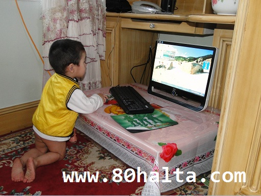
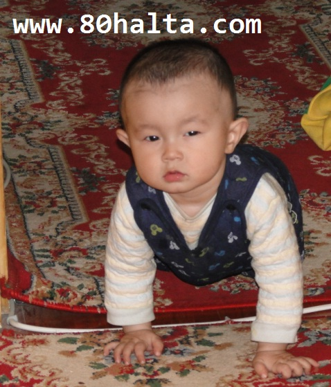
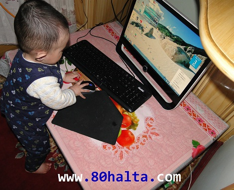
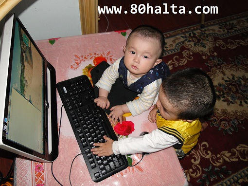
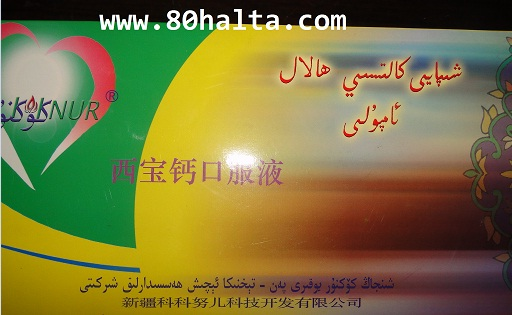
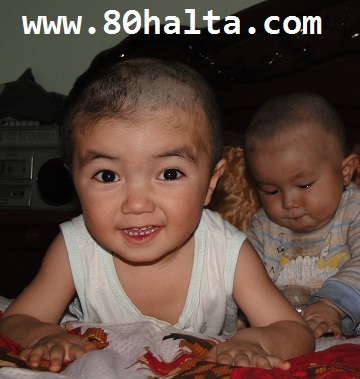
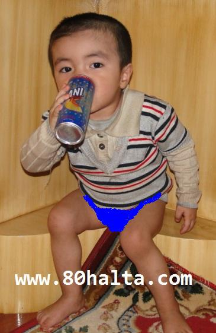
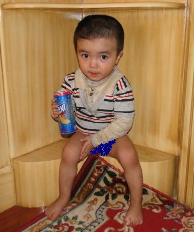

ئالدىنقى يازما
ئالدىنقى يازما كېيىنكى يازما
كېيىنكى يازما
مېنىڭ ئوغۇللۇرۇم بلوگ يازغۇدەك بوپتۇ
ئاپتور:Birzat ۋاقتى:2011-03-04


ئىلگىرى بلوگىمغا كۈندە دېگۈدەك يېڭىلىق مەزمۇنلارنى يوللاپ يامان ئۈگۈنۈپ قاپتىكەنمە، مانا ئەمدى 3-4 كۈندە بىر قارىسىمۇ يېڭىلىق كۆرگىلى بولمايدىغان بولۇپ <<تېما قەھەتچىلىكى>> يۈز بەرگىلى تۇردى. كۆپۈنچە ئادەملەر قان بېسىمى، خىزمەت بېسىمى، خوتۇن بېسىمى بولۇپ قىلىۋاتقان بۈگۈنكى كۈنلەردە مەن <<بلوگ بېسىمى>> غا دۇچ كىلىۋاتىمەن. ئىزدەپ باقسام بۇنداق بېسىمغا ئىلگىرى ئۇيغۇرچە بلوگ يازىدىغانلاردىن جېكمۇ دۇچار بولۇپ بېقىپتىكەن.
راستىنى دېسەم ئۆزۈمنى قەستەن ئالدىراش قىلىپ كۆرسىتىشتىن سەل خىجىل بولىمەن. كۈندۈزلىرىغۇ تېرىكچىلىك ئۈچۈن ئالدىراش يۈرۈپ بلوگنى يېڭىلاشقا ۋاقىت چىقمايدۇ، كەچتە ۋاقىت چىققان بىلەن ئۆيدىكى كومپيۇتېر ماڭا ئاشمايدۇ. ھەكىمنىڭ خوتۇنى بەرگىلى ئۇنىمايدىغان ئوخشايدۇ دەپ قالماڭلا، ئوغۇللىرىمدىن ئاشمايۋاتىدۇ، (بۇ باللا كىچىكلا تۇرۇپ، بلوگىر بولۇپ كېتەمدۇ، نېمە؟!!)
ئوغۇللىرىمدىن ئاشمايۋاتىدۇ، (بۇ باللا كىچىكلا تۇرۇپ، بلوگىر بولۇپ كېتەمدۇ، نېمە؟!!)
ئىككى ياشقا كىرىپ سەل ئاشقان چوڭ ئوغلۇم ئۆمەر<< دادا،مەن كومييۇتوي ئاچاي >> دەپلا كونۇپكا تاختىسى بىلەن چاشقىنەكنى قولىغا ئىلىۋالغان.

بۇنى كۆرۈپ تېخى يېشىغا توشمىغان كىچىك ئوغلۇم بىلال ئۆمۈلەپ كىلىدۇ، ئۇنىڭ كومپۇتېرغا بەك ئىشقى بار، كونۇپكا تاختىسى دېگەننى ۋەھشى تاراقشىتىپ قويىدۇ.



شۇنىڭ بىلەن بۇ ئالدىراش ئاكا-ئۇكا <<بلوگېر>>لار كومپۇتېر ئالدىدا لىققىدە ئولتۇرۋېلىپ مېنىڭ 80خالتا بلوگىمغا كىرىپ يازما ، سۇئاللارغا جاۋاب يېزىشقا ئىمكانىيەت بەرمەيدۇ، قانداق قىلىمىز ئەمدى، ھازىر جاھان كىچىك باللارنىڭ ئىكەن، بوش تۇرسا بوزەك ئەتكەن، چىڭراق ۋاقىراپ قويسا بولدى، ئالەمنى-مالەم قىلىپ جاھاننى بېشىغا كىيىپ قېقىراپ يىغلاپ <<بولدى ، يېغلىمايدىغانلا ئىشىڭ بولسا سەنلا ئوينىغىن مۇشۇ كومپيۇتېرنى >> دېگۈزۋېتىدۇ. كىتابخانام جايلاشقان ياتاق ئۆيۈمگە بالىلارنى كىرگۈزمەي ئىشىكنى تاقاپ قوياي دېسەم، بىنا ئۆي دېگەن تارچىلىق بولۇپ باللارنىڭ ئويۇن ئوينايدىغان بوشلۇقى بەكلا تارىيىپ كېتىدىكەن. ئۆيۈمنىڭ قۇرۇلمىسى ئۇزۇنىسىغا بولۇپ ياتاق ئۆيلەر ئىككى چەتكە ئورۇنلاشقان، ئوتتۇرسىدا مىھمانخانا، كارىدۇر، تازىلىق ئۆيى بار. ئىككى يىرىم ياشقا كىرەي دېگەن چوڭ ئوغلۇم ئۆينىڭ ئۇ چېتىدىن بۇ چېتىگە يۈگۈرۈپ يۈرۈپ ئوينايدۇ. ئۇنىڭ ئارقىسىدىن يېشىغا توشمىغان ئىنىسى ئۆمىلەپ ئەگىشىدۇ. ئۇنىڭ ھازىر ئۆمۈلەش <<تېخنىك>>سى ئاجايىپ يۇقۇرى سەۋيەگە يەتتىكى ئۆينىڭ بىر چېتىگە ئاپىرىپ قويۇپ چەتتىكى ياتاق ئۆيۈمگە كىرىپ كومپيۇتېر ئالدىغا كىرىپ بولغۇچە ئارقامدىن ئەگىشىپ ئۆمۈلەپ كىلىپ بولىدۇ. ھازىر ئۆمەر سەل غەرەز ئۇقىدىغان بولدى، ئەتتىگەندە ئىشقا ماڭغىچە بالام كومپيۇتېرغا چىقىلما، كەچتە بىللە ئوينايمىز جۇما، ماقۇلما، دېسەم چۈچۈك تېللىرى بىلەن، ماقۇل، دادا پات كېلەسە، ئاللا ئامانەت، خوش دەپ ئۇزۇتۇپ چىقىدۇ.مەڭزىگە سۆيۈپ قويۇپ ئىشىمغا ماڭىمەن. ئۆتكەندە چۈشتە ئۆيگە تاماققا كىرىپ ئولتۇرسام كۆزۈمنى غەلەت قىلىپ ياتاق ئۆيگە غىپلا قىلىپ كىرىپ كەتتى، مېنى ئارقىسىدىن كىرىپ كومپيۇتېرنى ئاچقىلى قويمايدۇ دەپ ئىشىك قۇلۇپىنى ئىچىدىن تولغاپ ئىتىپ قويۇپ كومپيۇتېرنى ئىچىپ كونۇپكا تاختىسىنى قالايمىقان تاراقشىتقىلى تۇرۇپتۇ. ما باللانىڭ يامانلىقىنى ئەمدى، دەپ قۇلۇپنى ئاچقۇچ بىلەن ئىچىپ كىرەي دەپ قارىسام ئاچقۇچنى ئۆي ئىچىدە قويۇپ قويغان ئىكەنمىز. ئىشىكنى ئاچقىن دەپ شۇنچە يالۋۇرساقممۇ خىيالىدا يوق ئويناپ ئولتۇرۇۋەردى، بىردەمدىن كىيىن ئۆزى زىرىكتى بولغاي ئىشىك يېنىغا كىلىپ ئىشىكنى ئاچماق بولۇپ قۇلۇپنى تاراقشىتتى، لىكىن باشتا ئاسانلا ئىتىپ قويغان بىلەن ئەمدى ئاچالمىدى، يا كىچىك بالىغا گەپ ئۇقتۇرۇپ بولمىغان سىرتىدا تۇرۇپ شۇنچە ئۈگەتسەكمۇ قۇلۇپنى ئاچالمىدى، بىردەم ھەپىلىشىپ بېقىپ يېغلىغىلى تۇردى، يىغلىغانچە قۇلۇپنى ئاچالمىدى، ئۆزى سولىنىپ ئۆزى قورقۇپ كەتتى بولغاي ئېسەدەپ تېخىمۇ كۈچەپ يىغلاشقا باشلىدى، بىز سىرتىدا تۇرۇپ قورقمىغىن بالام دەپ شۇنچە گوللاپ تۇرساقمۇ ئامال بولمىدى، ئىشىك تاقاق، بالا قېقىراپ يۈرەكنى ئەزگۈدەك ئانا، داداۋۋ دەپ يېغلىغىلى تۇردى. ھەر قانچە قىلىپمۇ ئىشىكنى ئاچالماي يۈگۈرەپ چىقىپ بىنا تېمىغا چاپلاپ قويغان <<قۇلۇپ ئاچىمەن>> دېگەنلەرگە تېلفۇن قىلسام بىر خەنزۇ ئىلىپ بەش مىنۇتتىلا يېتىپ بارىمەن، خاتىرجەم بول، لىكىن 50 كوي بىرىسەن ، دېدى. ۋاي بولدى چاتاق يوق، ئىچىدە ئىككى ياشلىق بالا سولىنىپ قالدى، تېز كەلگىن، سېنى دېگىنىڭدەك رازى قىلىمەن دەپ تېلفۇننى قويدۇم. ئۇ ئاداشمۇ ۋەدىسىدە تۇرۇپ تېزلا كەلدى، قۇلۇپنى كۆرۈپ << بەك گوۋداڭ>> ئىكەن دەپ بېشىنى قاشلاپ تۇرۇپ كېتىپتى، ما ئاداش ئاچالمالمامدۇ نېمە دەپ بېشىمدىن تۈتۈن چىقىپ كەتتى، بالا ئېسەدەپ يېغلاۋىرىپ ئۆيدىكىلەرنى ھەتتا قوشنىلارنىمۇ بىسەرەمجان قىلىۋەتكەن ئىدى. قۇلۇپچى سومكىسىدىن بىر نېمىلەرنى ئاقتۇرۇپ يۈرۈپ مىنۇتقا يەتمىگەن ۋاقىتتىلا <<تىرىك>> قىلىپ قۇلۇپنى ئىچىۋەتتى. بالىنى كۆرۈپ شۇنداق خوش بولۇپ كەتتۇق. ئۆمەر يېغلاپ ياشلىرى تۆكۈلۈپ كۆزلىرى قىزىرىپ كەتكەن، ھە دەپ ئېسەدەپ ئانىسىنىڭ قۇچىقىغا ئۆزىنى ئاتتى. كىلىشكىنىمىز بويچە 50 كوينى قۇلۇپچىغا بىرىپ رەھمەت ئېيتىپ ئۇزۇتۇپ قويدۇم. ئىلگىرى ئاتا-ئانىلىرىمىز 7-8 باللانى بىر يەرلىرىمىزنى كۆيدۈرۈپ قويماي، مېيىپ-چولاق قىلىپ قويماي بېقىپ قاتارغا قوشالاپتىكەن. ھەقىقەتەن نوچى ئادەملەركەن دەپ قالىمەن. ھازىر مۇشۇ ئىككى بالىنى بېقىپ بولالماي چارچاپ كېتىۋاتىمىز. كىچىك ئوغلۇم بىلال بەك تېتىك ئىدى، كېچىسىمۇ ئۇيقۇسى ياخشى -كەچتە ئانىسى ئىككى-ئۈچ قېتىم ئېمىتىپ قويسىلا تاڭ ئاتقۇچە ئوبدان ئۇخلايتتى. ما يېقىندا كۈندۈزلىرى يامان ئەمەس ئويناپ يۈرۈيدۇكېچىچە قېقىراپ يىغلاپ ھېچ ئادەمگە ئاراملىق بولمىدى. بالا يېغلاۋەرسە ئۇخلىغىلى بولماي ئۇيقۇسىز ئولتۇرۇپ كېتىمەن، ئانىسى بىچارە ئاقىدىغانلىكى چارىلەرنىڭ ھەممىنى قىلىپ باقىدۇ، لىكىن ھېچ پايدىسى بولىدىغاندەك ئەمەس. قارىسام بالىنىڭ باش ئەتراپىنىڭ يۇمۇلاق ھالەتتە چېچى چۈشكىلى تۇرۇپتۇ ھەم باش قىسمى تەرلەپلا تۇرىدۇ. ئىشتىھاسىمۇ كەم، زورلاپراق يېگۈزسە بىردەمدىلا ياندۇرۇپ بولمىدى. شۇنىڭ بىلەن بالىغا ئاپتاپتا ئوبدان پىشقان ئاپتاۋى قىزىل گۈلقەنت، بىھى شەربىتى، كۆكنۇر شىركىتى ئىشلىگەن كالتىسىي ئامپۇلى دېگەنلەردىن ئازدىن ئىچكۈزۈپ بەرسەك ئىككى-ئۈچ كۈنگە قالماي رەڭگى-رويىغا قان يۈگۈرۈپ، ئۇيقۇسى ياخشىلىنىپ يېغىسى پەسلەپ قالدى. ئۇف خۇداغا شۈكۈرى.

كىچىك ۋاقىتلىرىمىزدا چېچىمنى چۈشۈرگۈزىدىغاننىڭ گېپىنى ئاڭلىساملا ئىچىمگە قورقۇنۇچ كىرىۋالاتتى، چوڭ دادام رەھمەتلىك بەك ئاچچىقى يامان، سەپرا ئادەم ئىدى، قۇلقىڭنى كېسىۋېتىمەن، جىم ئولتۇر گۇي، دەپ قورقۇتۇپ تۇرۇپ بېشىمنى كۈچەپ ئۇۋلاپ چېچىمنى ئۇستۇرىدا ئالاتتى. يىغلىساممۇ ئۈنۈمنى سىرتىغا چىقىرالماي قىينىلىپ تۇرۇپ بىرەتتىم. چوڭ دادامدىن باشقا ئادەم چېچىمنى ئالىمەن دېسە ھەر ئاماللارنى قىلىپ قىلىپ قىچىپ كېتەتتىم، چوڭ ئوغلۇم ئۆمەر دەل مېنى دوراپ چىققانمىكىن، چېچىنى ئازىراقلا ئىلىپ بولغۇچە قېقىراپ يىغلاپ ھەممە ئادەمنى قورقۇتۇپ <<ۋاي بولدى>> دېگۈزىۋەتتى. شۇنىڭ بىلەن بېشىنى <<ئالاپاساق>> قىلىپ قويدۇق.

ئۆتكەندە ئۆمەر ئۇخلاپ قوپۇپمۇ، ئۇسساپ قالسىلا ھەسەل چاي ئىچىمەن دەپ غەلۋە قىلىپ خاپا قىلىۋەتتى. ھەسەل ئىستىمال قىلىش بالللانىڭ ئەقلىي ئىقتىدارىنى كۈچەيتىپ رەڭگى-رويىنى چىرايلىق قىلىدىكەن، لىكىن مىقداردىن كۆپ بولۇپ كەتسە باشقىچە ئەكىس تەسىرى بولۇپ قالارمۇ دېگەن ئەندىشە بىلەن ھەر ئاماللارنى قىلىپ يۈرۈپ ھەسەل خۇمارىنى بىسىقتۇردۇق. كۆرمىسىلا ھەسەل ئىچىمەن دەپ تۇرۇۋالمايدۇ، لىكىن مېۋە-چېۋە، شەربەت، چاي دېگەنلەرگە بەك ئۆزىنى ئۇرىدۇ. ئادەتتە بازارنىڭ ئەخلەت ئىچىملىكلىرىنى ئىمكان بار ئىچكۈزمەيمەن. ئانامنى ئامراق دەپ سەئۇدىينىڭ RANI شاپتۇل سۈيىدىن ئەكىرىپ بىرەتتىم. بۇ ئىچىملىكنى خۇددىي ئىنتايىن ئوبدان پىشقان شاپتۇلنى سىقىپ چىقارغاندەكلا تەبئىي تەم، ئېسىل بولغاچقا مەنمۇ ئامراق. ئۇسساپ چارچاپ قالغاندا مەنمۇ ئىچىپ قويىمەن. ئادەمنىڭ شۇنداق ھاردۇقىنى ئالىدۇ. مانا مۇشۇ ئىچىملىكنى ئاجايىپ ئىچىپ قويىدۇ. (لىكىن كۆپ بەرمەيمىز). مۇشۇ ئىچىملىكنىڭ ئىلانىغا چىقسا بولامدىكى دەپ قالدىم.


مانا مۇشۇنداق بالىلىقنى ئەسلىگەچ بالا باقىدىغان ئىش ئىكەن. بالا باققاچ ئاتا-ئانا قەدرىگە يېتىدىكەنمىز. پەرزەنتلىرىمىزنىڭ ساغلام، ئەقىللىق ئۆسۈپ يېتىلىشىنى ئۈمۈد قىلىپ كۆپ ئەجىرلەرنى قىلىدىكەنمىز. خۇددىي ئاتا-ئانىمىز بىزنى ھېچ مۇددىئاسىز پەرۋىش قىلىپ تەربىيلەپ ئۆستۈرگەندەك بىزمۇ بارلىقىمىزنى پەرزەنتلىرىمىزگە بېغىشلايدىكەنمىز. شۇ ئۇزۇن كېچىلەرنى ئۇيقۇسىز ئۆتكۈزۈپ، ئاپپاق سۈتى ، ئانىلىق مىھرى بىلەن بىزنى پەپىلەپ چوڭ قىلغان ئانىلىرىمىزنىڭ ئۆمرى ئۇزۇن بولسۇن، ئەركەكلىك، يېگىتلىككە ئۈلگە بولۇپ قەددىمىزنى تىك قىلغان ئاتىلىرىمىزنىڭ قەددى پۈكۈلمىسۇن، ئاللاھ ئۇلاردىن رازى بولسۇن!

 يازما مەنبەسى: بېكەت ئەسىرى
يازما مەنبەسى: بېكەت ئەسىرى خەتكۈش: پارچە-پۇرات خاتىرىلەر بالا، پەرزەنت، بالىلىق
خەتكۈش: پارچە-پۇرات خاتىرىلەر بالا، پەرزەنت، بالىلىق  مۇناسىۋەتلىك يازمىلار:
مۇناسىۋەتلىك يازمىلار:
 قايتۇرما
قايتۇرما ]
]بلوگ ئادرىسىمىز: http://uslublar.com
بلوگ تۇغى: http://uslublar.com/logo.gif
ئەگەر خەتنىلىك ياخشى بولمىسا ئۇنداقتا جىنسى تۇرمۇشقا تەسىر كورسىتەمدۇ؟
مەنمۇ بىر كۈنى بالامنىڭ تامىقىنى بىرىپ بولۇپ، تاماق يەپ ئولتۇراتتىم، بالام كۆزامنى غەلەت قىلىپ، ئىشىكتىكى ئاچقۇچنى چىقىرىپ، كومپىيۇتىر بار ئويگە كىرىپلا ئىشىكنى تاقىۋىتىپتۇ، كەچ سائەت 7 لەر ھەم قىش بولغاچقا چىراق يىقىلمىغان ئوينىڭ ئىشىكى يىپىلىشى بىلەنلا ئوي ئىچى قاپقاراڭقۇ بولۇپ، بەكلا قورقۇپ كىتىپتۇ، ئادەتتە ئۆزى تاقاپ ئاچالاتتى، ئۇ كۈنى قورقۇپ كەتكەچكە بەكلا يىغلاپ كەتتى، تىشىدا تۇرۇپ مەن يىغلىدىم، ئۇنى قانچە بەزلىگەنسىرى ئۇ شۇنچە يىغلىدى، تىلى ئەمدى چىقىۋاتقان چاغلار ئىدى، قورقىنىدىن گەپنى پۈتۈن قىلىپ، ئاپا كىنى سەن، دادام كىنى دەپ يىغلايدۇ، مەنمۇ دەرھال پەسكە چۈشۈپ قۇلۇپ ئاچىدىغانغا تىلىفۇن قىلدىم، ئۇ ئاۋال مەندىن چوڭ ئىشىكمۇ، ياتاق ئۆينىڭ ئىشىكىمۇ دەپ سورىدى، ئاندىن بىرىشىم 200 يۈەن دىدى، مەن دەرھال قوشۇلدۇم، ئۇمۇ 10 مىنۇتقا قالماي كەلدى، ئىشىكنى ئۇنى بۇنى قىلىپ، ئىسىم كارتۇچكىسىغا ئوخشاش نىپىزلىكنى قاتتىق سۇلياۋنى ئىشىك ئارلىقىغا تىقىپلا ئىشىكنى ئېچىۋەتتى، ئوقتەك ئۇيگە كىردىم، بالام قورقىنىدىن يەردە دۈم يىتىپ قولى بىلەن كۆزىنى توسىۋىلىپ يىغلاۋىتىپتۇ، يۈرۈكۈم ئىزىلىپ كەتتى، دەرھال ئۇنىڭغا 200 يۈەن بىرىپ يولغا سالدىم، كەتكەندىن كىيىن قورسۇقۇم كۆپتى، ئادەتتە كۆپ قوللىنىدىغان بۇ ئۇسۇل جىددىيلەشكەندە ئىسىمگە كەلمەپتۇ، ئۇمۇ بالا ئۇيدە سولىنىپ قالدى، دەپ يىغلاپ تۇرغۇنۇمنى ئاڭلىغاندىن كىيىن، ئىسىم كارتۇچكىسى بىلەن ئاچىسەن دىسە بولمامدۇ، دەيمەن، بىرزات ئەپەندىنىڭ يازمىسىنى ئوقۇۋىتىپ، مەنغۇ ئايال كىشى ئىسىمگە كەلمەپتۇ، سىزمۇ جىددىيلىشىپ، مۇشۇ ئۇسۇلنى قوللىنىپ بىقىشنى ئۇنتۇپسىزدە-دەپ كۈلگۈم كەلدى، خۇدا ساقلىسۇن، بۇ ئىش باشقىلارنىڭ بىشىغا كەلمىسۇن، بالىنىڭ يىغىسى يۈرىكىنى ئەزمەيدىغان كىم بار دەيسىز.


توغرا دەيسىز، بلوگ يېزىشمۇ موھىم، ھەممىدىن موھىمى كەلگۈسىمىزنىڭ داۋامى بولغان مۇشۇ پەرزەنتلىرىمىزنى ياخشى تەربىيلەش ئۈچۈن زىھنىمىزنى، ۋاقتىمىزنى ھەتتا بارلىقىمىزنى بېغىشلاش.
 بالامنى سېغىندۇرىۋەتلە ھەكىم!
بالامنى سېغىندۇرىۋەتلە ھەكىم!